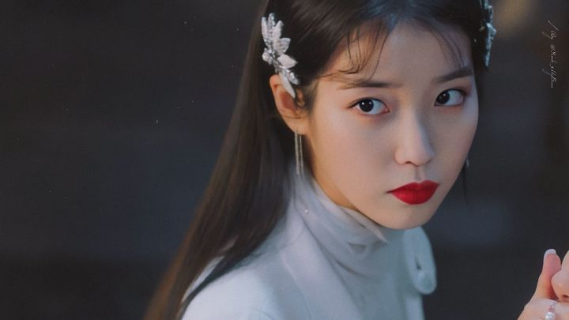
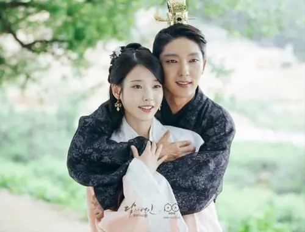

More Website Templates @ duhuahuaya
Her Biography and Experience

李知恩（이지은/Lee Ji Eun），艺名IU，1993年5月16日出生于韩国首尔特别市，韩国女歌手、演员、主持人。
2008年9月，在Mnet音乐节目《M ! Countdown》中演唱歌曲《迷儿》，正式出道；随后发行首张迷你专辑《Lost And Found》。
2009年，发行首张正规专辑《Growing Up》。
2010年，发行迷你专辑《Real》，主打歌《好日子》连续五周位居韩国Gaon榜榜首。
2011年1月，出演校园剧《dream high》；3月，成为SBS音乐节目《人气歌谣》的固定主持人。发行第二张正规专辑《Last Fantasy》，全专歌曲总下载量超过1700万次。
2012年，名列韩国福布斯名人榜第三位。
2013年，发行的第三张正规专辑《Modern Times》展现了多元化的歌曲风格。凭借周末剧《最佳李顺心》获得KBS演技大赏新人女演员奖。
2014年5月，发行翻唱专辑《花书签》；12月，获得韩国盖洛普调查歌手部门第一位以及第16届Mnet亚洲音乐大奖最佳女歌手奖。
2015年，发行迷你专辑《CHAT - SHIRE》，并被《Billboard》认可为韩国流行音乐百强榜的领跑者；同年，获得韩国大众文化艺术奖国务总理表彰奖。主演KBS金土剧《制作人》。
2016年，主演古装穿越《步步惊心：丽》。
2017年4月，发行第四张正规专辑《Palette》。9月，发表第二张翻唱专辑《花书签2》。李知恩还涉足主持以及表演领域。12月，获2017MAMA最佳女歌手奖。
2018年1月，获得韩国金唱片奖音源部门大奖。
2019年4月，首次主演电影《Persona》在网飞放映。

步步惊心：丽》是韩国SBS电视台于2016年8月29日首播的浪漫奇幻古装剧，由金奎泰执导，赵允英编剧，李准基、李知恩、姜河那主演。
该剧根据中国小说《步步惊心》改编，讲述了在日全食现象中灵魂穿越到高丽的21世纪女人解树和四王子王昭之间的浪漫爱情故事，以及高丽宫廷火热的王权竞争
高丽太祖王建的四王子王昭（李准基饰）被人称作“狼狗”，他一直把自己封闭在冷酷的面具之下。解树（李知恩饰）是一个性格倔强坚韧的女汉子，原本生活在21世纪，却突然穿越到了高丽时代，陷入历史事件的中心。王昭遇到解树后，渐渐敞开心扉，并在解树的鼓励下摘下面具，开始新的人生。解树也开拓着自己全新的命运，与王昭以及一众王子发展出友情和爱情，并从中逐渐成长
My Recent Awards
meeting
I was enchanted to meet you,IU.
more
Happiness
Life is full of confusing and disordering Particular time, a particular location, Do the arranged thing of ten million time in the brain, Step by step , the life is hard to avoid delicacy and stiffness No enthusiasm forever, No unexpected happening of surprising and pleasing So, only silently ask myself in mind Next happiness, when will come?
人生的纷纷扰扰，杂杂乱乱， 在一个特定的时间，特定的地点， 做脑海中安排了千万遍的事， 一步一骤，人生难免精致，却也死板， 永远没有激情，没有意料之外的惊喜。 于是，也只有在心里默默地问： 下一班幸福，几点开？
more
Journey
Then the wandering soul wild crane stands still the memory river Listen to whistle play tightly ring slowly, Water rises a ship to go medium long things of the past. Wait for a ship’s person Wait for one and other, But hesitate always should ascend which ship Missed Had to consign the hope to next time, Finally what to wait for until has no boats and ships to come and go, Sunset west .
再孤魂野鹤的伫立记忆河头， 听着哨子的紧奏慢响， 水涨船行中的悠悠往事。 等船的人儿， 等了一班又一班， 却始终犹豫着该登哪一只。 错过的， 只好把希望寄托到了下一回， 终究等到的是没有船只的过往， 日落西头 。
more
Forever
A breeze blew through the room, blew curtains in at one end and out the other like pale flags, twisting them up toward the frosted wedding-cake of the ceiling, and then rippled over the wine-colored rug, making a shadow on it as wind does on the sea.一阵清风吹过屋子里，把窗帘从一头吹进来，又从另一头吹出去，好像一面面白旗，吹向天花板上糖花蛋糕似的装饰，然后轻轻拂过绛色地毯，留下一阵阴影，有如风吹过海面。
more